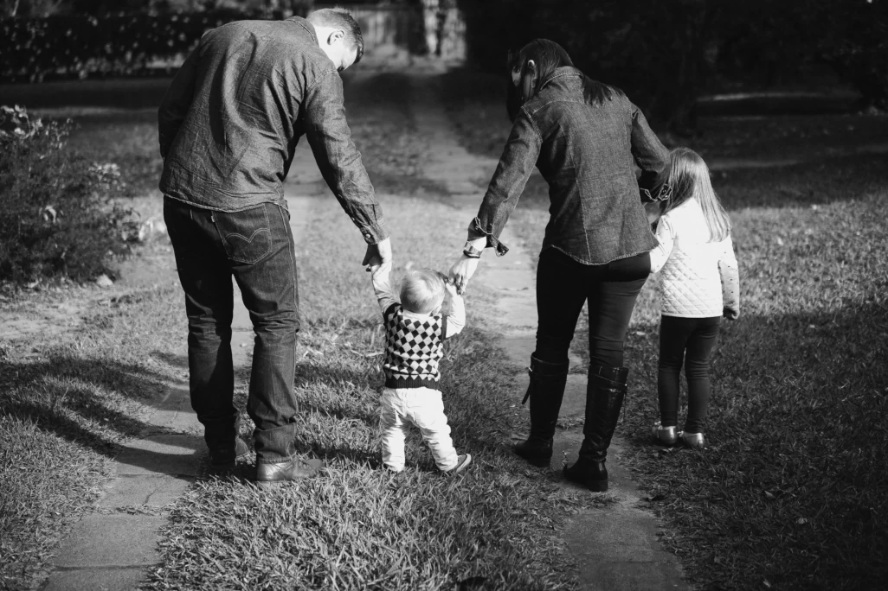

Recording — Studio · NY
Recording — Studio · NY
Split:A Podcast on Modern Divorce.
Hosted by renowned family law attorney Gus Dimopoulos, Split: A Podcast on Modern Divorce explores the complex realities of divorce, custody, parental alienation, coercive control, mental health, and modern family conflict through candid, insightful conversations.
Blending legal expertise with real-world perspective, Gus sits down with attorneys, therapists, experts, advocates, and individuals with lived experience to unpack the emotional, psychological, and legal challenges families face during separation and custody disputes.
Raw, honest, and deeply informative, Split has become a trusted resource for anyone navigating divorce or trying to better understand the evolving dynamics of modern family law.
Interested in being a guest?All episodes.
Twelve seasons of conversations on family law, conflict, custody, and the real work of ending a marriage.
When Suspicion Meets Strategy: Divorce Law & Investigation
With Jessica Zannetti
The Biggest Trends Reshaping Divorce Law in 2026
With Jill Spielberg, Esq., Abrams Fensterman
Divorce & Money: Financial Abuse, Hidden Assets, and Crypto
With Nick Himonidis & Gus Dimopoulos
Navigating Complex Dynamics in Divorce
With Heidi Davidson & Gus Dimopoulos
Safe Exchange and Supervised Visitation
With Tiffany Hamilton, YWCA CEO
Litigation Strategy & Tactical Decision-Making
With Heidi Davidson & Gus Dimopoulos
Parental Alienation: When Divorce Hurts More Than Just the Parents
With Dr. Amy Baker
Modern Divorce: Mediation, Gender Shifts & Snap Judgments
With Matthew Cooper
Narcissists, Love Bombs, & Red Flags: What You Missed (But Won’t Again)
With Dr. Kathleen McKay
Divorce is Changing — And You Need to Know How
With Lisa Zeiderman

Permissive vs. Authoritative Parenting: Striking the Right Balance
With Dr. Beth Raines